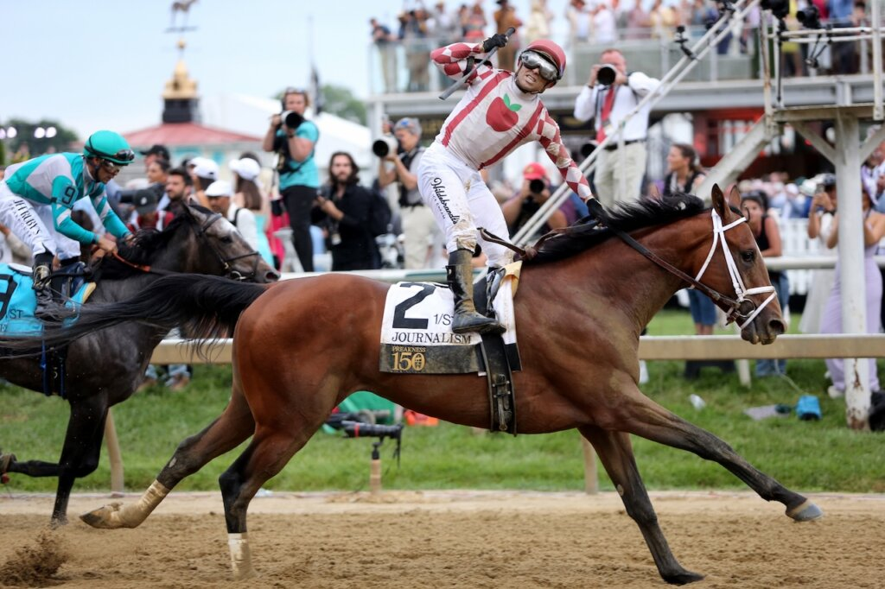

Renegade llega al Belmont Stakes tras su arrolladora exhibición en el Kentucky Derby
El hijo de Into Mischief superó el lastre del cajón 1 —sin ganador desde hace 41 años— con un remate demoledor en Churchill Downs que lo sitúa ahora como serio candidato en la tercera joya de la Triple Corona.

Foto: kentuckyderby.com
Renegade firmó una actuación memorable en el Kentucky Derby pese a la histórica maldición del cajón 1, que no produce ganador desde 1984. El ejemplar por Into Mischief superó empujones tras la salida y roces en el tramo final para remontar con un galope arrollador que en muchas ediciones habría bastado para sellar el triunfo.
Esa capacidad de remate, exhibida en Churchill Downs, convierte ahora al potro en firme candidato para el Belmont Stakes, la tercera cita de la Triple Corona estadounidense. El análisis del sector destaca el factor «sin apoyos en vallas» como ventaja clave en Belmont Park: el trazado neoyorquino premia a ejemplares que no necesitan bordear el andarivel, justo el perfil de un caballo que ya demostró desenvoltura en espacios reducidos y aptitud para el remate largo. La historia reciente del Derby recuerda que partir desde dentro sigue siendo un escollo casi infranqueable —cuatro décadas sin éxito—, pero Renegade desafió las estadísticas con un rodaje impecable que ahora lo proyecta como rival a batir en la distancia clásica del Belmont.
— Redacción de Galope al Día